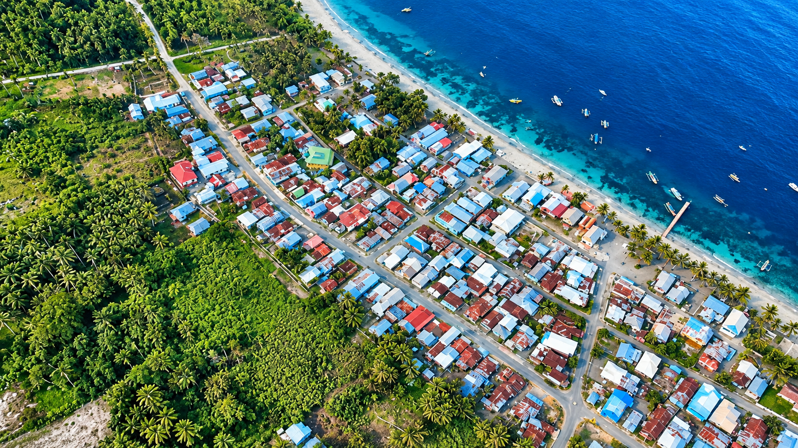

Wisata Alam
Potensi bentang alam dan pesisir dapat menjadi inspirasi wisata berbasis lingkungan dengan pengelolaan yang sesuai kondisi lapangan.
Jelajahi wisata →Mengenal identitas wilayah, potensi alam, dan kehidupan masyarakat di Kabupaten Banggai, Sulawesi Tengah.
Kenali Wilayah ↓
Balantak Utara merupakan kecamatan di Kabupaten Banggai, Provinsi Sulawesi Tengah. Sebagai bagian dari wilayah Sulawesi, kawasan ini dapat dikenali melalui kondisi geografis, kehidupan masyarakat, dan potensi sumber daya lokalnya.
Wilayah pesisir dan kegiatan ekonomi berbasis sumber daya alam menjadi bagian penting dalam memahami kehidupan masyarakat setempat. Potensi pariwisata dapat diperkenalkan dengan mengutamakan data yang akurat, keterlibatan warga, dan penghormatan terhadap budaya lokal.
Website ini merupakan media pengenalan awal. Informasi terperinci mengenai jumlah penduduk, batas wilayah, fasilitas, dan destinasi perlu dilengkapi dari sumber resmi.
Temukan lokasi wilayah ↗Potensi daerah dapat dikembangkan dengan menghubungkan kekayaan alam, masyarakat, dan kegiatan ekonomi lokal.
Potensi bentang alam dan pesisir dapat menjadi inspirasi wisata berbasis lingkungan dengan pengelolaan yang sesuai kondisi lapangan.
Jelajahi wisata →
Tradisi, kuliner, pengetahuan lokal, dan aktivitas sosial menjadi bagian penting dari identitas masyarakat.
Baca cerita →
Perikanan, pertanian, dan perkebunan berpotensi mendukung penghidupan serta usaha masyarakat setempat.
Kenali sumber daya →Foto merupakan ilustrasi. Keterangan potensi tidak dimaksudkan sebagai hasil inventarisasi resmi seluruh kegiatan ekonomi atau objek wisata setempat.

Pariwisata yang bertanggung jawab bukan hanya tentang menarik pengunjung, tetapi juga menjaga lingkungan dan memberikan manfaat bagi masyarakat setempat.
Kenali letak Balantak Utara sebelum merencanakan perjalanan.
Kecamatan: Balantak Utara
Kabupaten: Banggai
Provinsi: Sulawesi Tengah
Negara: Indonesia
Informasi akses jalan, transportasi, batas administratif, dan titik destinasi harus diverifikasi melalui sumber resmi serta kondisi lapangan terkini.
Buka Google Maps ↗Placeholder visual. Bukan peta administrasi resmi.
Mulai dari mengenal wilayah, memahami potensinya, hingga menyusun inspirasi perjalanan.
Jelajahi Paket Wisata →